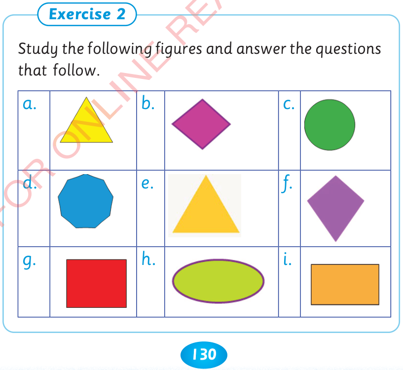

130



Exercise 1. 1. Name some objects that have the shape of a circle. 2. Which objects in your classroom have the rectangular shape? 3. Name some objects that have the shape of a triangle. 4. Mention some objects with the square shape. 5. Which objects have the oval shape? 6. List the names of all four-sided figures from your answer.

1. Name some objects that have the shape of a

circle.
2. Which objects in your classroom have the rectangular shape?
3. Name some objects that have the shape of a triangle.
4. Mention some objects with the square shape.
5. Which objects have the oval shape?
6. List the names of all four-sided figures from your answer.
Exercise 2. Study the following figures and answer the questions that follow. The labelled figures are: a, a yellow triangle; b, a purple diamond; c, a green circle; d, a blue octagon; e, a yellow triangle; f, a purple kite; g, a red square; h, a green oval; and i, an orange rectangle.
Study the following figures and answer the questions that follow.
a.

b.

c.

d.

e.

f.

g.

h.

i.


ARITHMETICS PUPIL'S STD 2.indd 130
06/11/2024 17:23